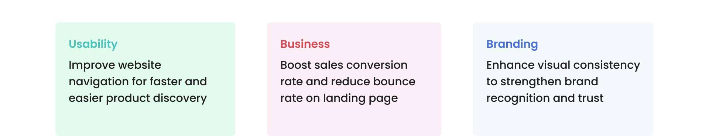

Role
Design and development
GenomeMe is a biotechnology company that distributes antibodies and diagnostic kits for identifying cancer cells worldwide. The project was born out of the inconvenience in the old school process of purchasing the products by having to manually contact the company's representative first via email or telephone. This resulted in the website having low conversion rate and high bounce rate.

The company faced challenges with its outdated product purchasing process, which required customers to manually contact representatives via email or phone listed in their website. This inefficient system led to low conversion rate and high bounce rate on their website, hindering the company's ability to efficiently reach potential customers.
In the first few weeks, I met regularly with the marketing team to discuss the website redesign project. We identified key pain points of the existing website, including problems with the user experience, as highlighted by customer feedback, team analysis, and my own observations.
We also defined project goals based on previously identified key pain points and team analysis.
From the research, data collected, and goals carried out, we identified opportunities in our design using the HMW framework:
The company offered dozens of antibody products, each with essential information for customers. Given the sheer volume of information, I explored various layout options to organize and display it effectively.

To enhance the user experience, we implemented product inquiry and filter selection features on the redesigned product page. The product inquiry feature allows customers to easily inquire about specific products directly from the page, while the filter selection feature enables them to choose the desired format or volume. To improve readability, we organized the information into clear sections separated by subtle divider lines.
 Comparison of previous and current product page
Comparison of previous and current product page
 Full page mockup of the redesigned product page
Full page mockup of the redesigned product page
We streamlined the landing page by focusing on the three core offerings: molecular pathology, molecular diagnostics, and genetic tests. This simplified design aims to drive sales and improve user experience. To maintain visual consistency with the rest of the website, we employed a subtle grey and white color scheme, reflecting the clean and professional aesthetic often associated with the healthcare industry.
 Comparison of previous and current landing page
Comparison of previous and current landing page
 Full page mockup of the redesigned landing page
Full page mockup of the redesigned landing page